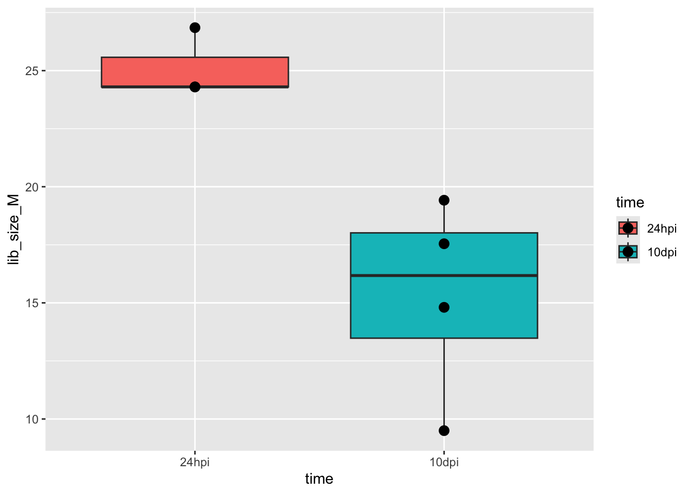
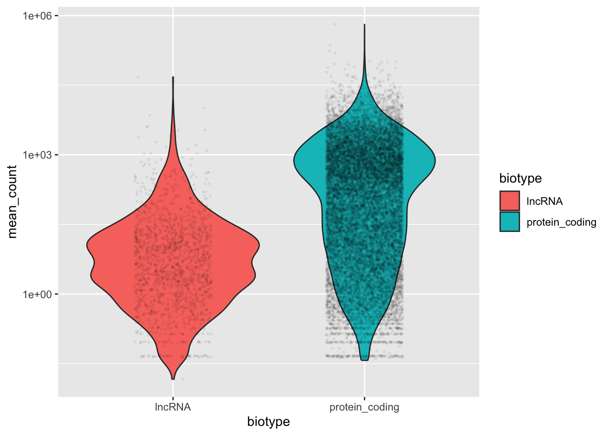
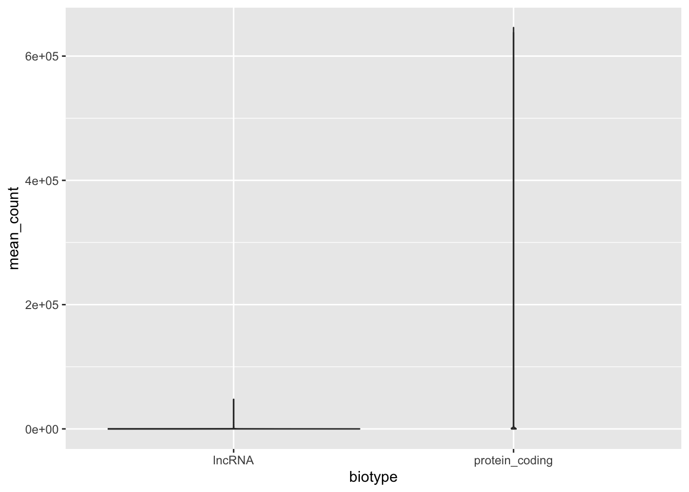
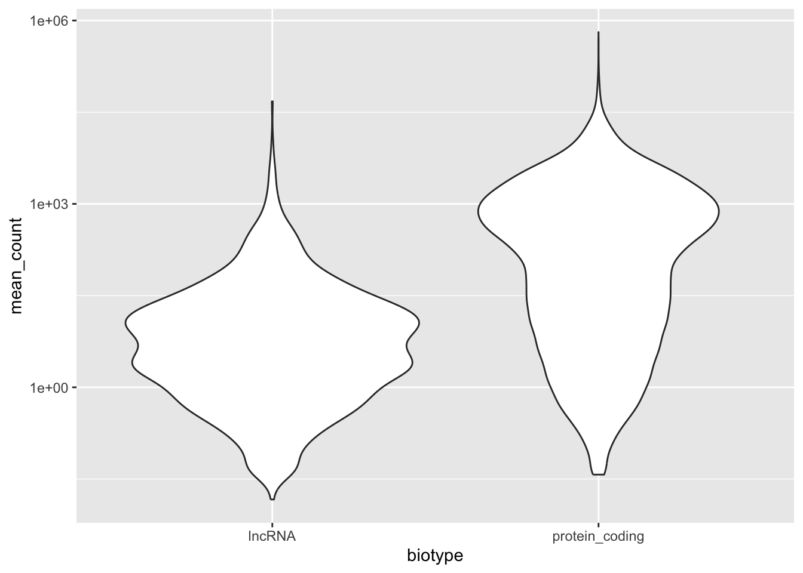
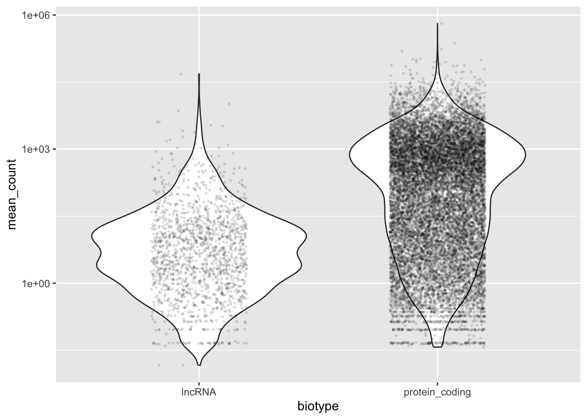
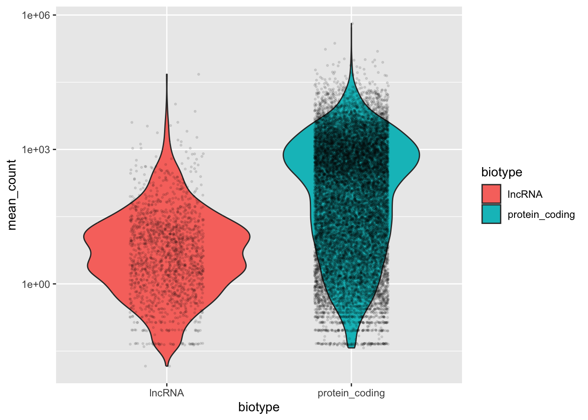
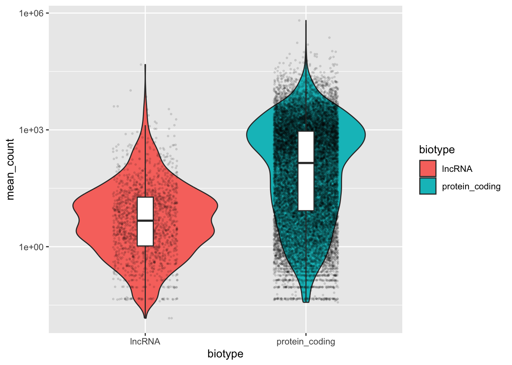
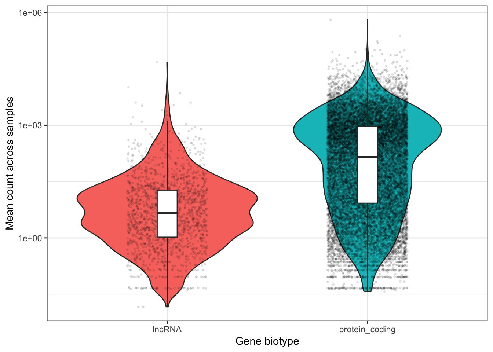
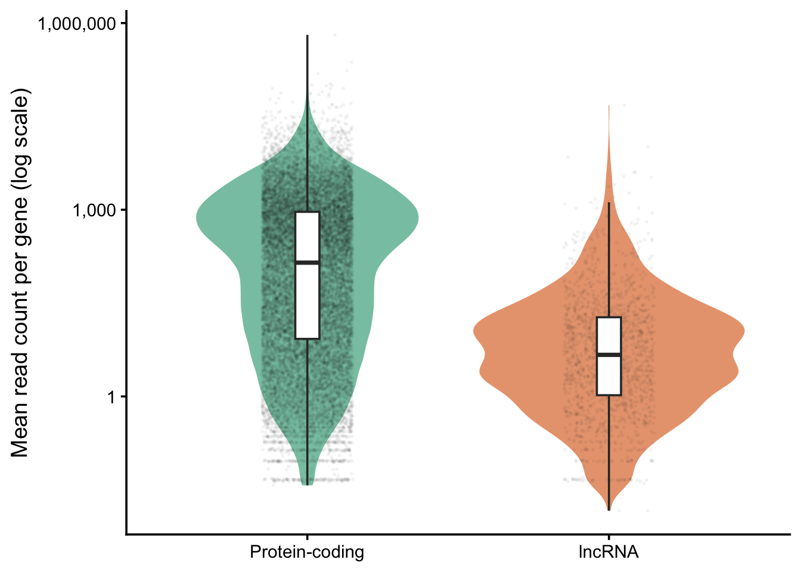

![]()
library(tidyverse)
# Read the count table, metadata, and gene annotation table
counts <- read_tsv(
"/fs/ess/PAS3493/share/week13/salmon.merged.gene_counts_length_scaled.tsv"
) |>
select(!gene_name)
meta <- read_tsv("../garrigos/meta/metadata.tsv") |>
# Make `time` a factor, so 24 hpi comes before 10 dpi in plots
mutate(time = factor(time, levels = c("24hpi", "10dpi")))
genes <- read_tsv("/fs/ess/PAS3493/share/week13/genes.tsv")
# Make a long-format count table, with the metadata added
counts_long <- counts |>
pivot_longer(cols = !gene_id, names_to = "sample_id", values_to = "count") |>
left_join(meta, by = "sample_id")Week 13 exercises:
R data wrangling and visualization
Introduction
Overview
In these exercises, you’ll keep exploring the RNA-seq gene count table from this week’s lectures, practicing the R material from weeks 12 and 13 in a few different ways:
- In Exercise 1, you’ll predict the output of code before running it.
- In Exercise 2, you’ll find and fix the mistakes in some code, and see which of them Claude can find.
- In Exercise 3, you’ll wrangle data to answer a biological question, and learn a new function to search text.
- In Exercise 4, you’ll recreate a plot from just an image.
- In Exercise 5, you’ll make and customize a violin plot.
- In Exercise 6, you’ll use Claude to polish a plot.
TipLecture page exercises
As usual, make sure to do any of the exercises on this week’s lecture pages that we didn’t do in class. Also, if you struggled with any of the exercises we did do in class, go over those again.
Setting up
Open Positron and connect to OSC like in week 12, and open the
week13folder that you created in this week’s lectures.Create a new Quarto document
week13/w13_exercises.qmd, with a YAML header with a title, your name, and the date.Add the following code chunk to the top of your document, which loads the tidyverse, reads the two tables from the lectures plus a gene annotation table (see below), and makes a long version of the count table that includes the metadata:
The gene annotation table
The count table only has gene IDs, which don’t tell you what the genes are. That information is in the genome annotation (GTF) file. To make things easier, we’ve extracted a table from this file, which you read into genes above. It has one row per gene, and these columns:
gene_id: Gene ID, as in the count tablechromosome: Chromosome (chr1–chr3andMTfor the mitochondrial genome), orNAfor genes on smaller pieces of the genome assembly that have not been placed on a chromosomebiotype: Type of gene, such asprotein_codingorlncRNAdescription: Description of the gene producttranscript_length: Length (bp) of the gene’s longest transcript
genes# A tibble: 19,673 × 5
gene_id chromosome biotype description transcript_length
<chr> <chr> <chr> <chr> <dbl>
1 LOC120427725 chr1 protein_coding homeotic protein de… 3254
2 LOC120427726 chr1 protein_coding segmentation protei… 2098
3 LOC128092783 chr1 lncRNA uncharacterized LOC… 1075
4 LOC120427727 chr1 lncRNA uncharacterized LOC… 1707
5 LOC120427724 chr1 protein_coding homeotic protein pr… 3172
6 LOC120422531 chr1 protein_coding sterol regulatory e… 3855
7 LOC120422536 chr1 protein_coding zinc finger protein… 2909
8 LOC120422525 chr1 protein_coding uncharacterized LOC… 1946
9 LOC120422524 chr1 protein_coding uncharacterized LOC… 2412
10 LOC120422535 chr1 protein_coding carbonic anhydrase-… 2568
# ℹ 19,663 more rowsYou’ll use this table in Exercises 3 and 5.
TipGeneral tips for the exercises
- Install any packages that you haven’t installed yet in the console, not in your Quarto document. Apart from installing packages, run all your code in code chunks.
- Add a header for each exercise to your document, so it’s easy to navigate the rendered document using the table of contents.
- Render your document every now and then, to catch problems early.
Exercise 1: Predict the output
For each question, first decide on your answer, and then run the code to check whether you were right.
Which samples will this code keep?
meta |> filter(time == "24hpi", treatment != "control")- Only the control samples at 24 hpi
- Only the cathemerium and relictum samples at 24 hpi
- The cathemerium and relictum samples at both time points
- All samples at 24 hpi, plus the cathemerium and relictum samples at 10 dpi
Click to see the solution
b) is correct:
meta |> filter(time == "24hpi", treatment != "control")# A tibble: 7 × 3 sample_id time treatment <chr> <fct> <chr> 1 S64 24hpi cathemerium 2 S67 24hpi cathemerium 3 S70 24hpi cathemerium 4 S71 24hpi relictum 5 S74 24hpi relictum 6 S65 24hpi relictum 7 S68 24hpi relictumBecause the two conditions are separated by a comma, a row has to meet both of them. Answer d) contains the rows that meet either condition, which is what you’d get with
|instead of a comma.What will this code return?
mean(counts$S63 > 0)- The mean count of sample
S63 - A
TRUEorFALSEfor each gene - The proportion of genes with at least one read in sample
S63 - An error, because you can’t compute the mean of logicals
Click to see the solution
c) is correct:
mean(counts$S63 > 0)[1] 0.8318748The comparison returns a
TRUEorFALSEfor each gene, and becauseTRUEcounts as 1 andFALSEas 0, the mean of these logicals is the proportion ofTRUEs: 83% of genes were detected in sampleS63. This is the same assum(counts$S63 > 0) / nrow(counts), but shorter.- The mean count of sample
What will each row of this code’s output represent?
counts_long |> summarize(total = sum(count), .by = c(treatment, time))- One time point
- One treatment
- One combination of treatment and time point
- One sample
Click to see the solution
c) is correct:
counts_long |> summarize(total = sum(count), .by = c(treatment, time))# A tibble: 6 × 3 treatment time total <chr> <fct> <dbl> 1 control 24hpi 75446143. 2 cathemerium 24hpi 64139119. 3 relictum 24hpi 88981274. 4 cathemerium 10dpi 80101441. 5 relictum 10dpi 101731001. 6 control 10dpi 61271345.When you group by two columns, you get one row for each combination of their values.
Which of these lines of code return the same result?
round(mean(counts$S63), 1) round(digits = 1, x = mean(counts$S63)) round(1, mean(counts$S63))- All three
- Only the first two
- Only the first and the third
- None
Click to see the solution
b) is correct:
round(mean(counts$S63), 1)[1] 1288.6round(digits = 1, x = mean(counts$S63))[1] 1288.6round(1, mean(counts$S63))[1] 1- In the first line, the arguments are not named, so R matches them by position: first
x, thendigits. - In the second line, the arguments are named, so their order doesn’t matter.
- In the third line, the arguments are not named but in the “wrong” order, so R rounds the number 1 to about 1,289 digits, which is still 1. Note that R doesn’t give an error or warning here!
Which plot will this code produce? (
geom_smooth()adds a trend line, here a straight one from a linear model.)counts_long |> summarize( lib_size_M = sum(count) / 1e6, n_detected = sum(count > 0), .by = c(sample_id, treatment) ) |> ggplot(aes(x = lib_size_M, y = n_detected)) + geom_point() + geom_smooth(aes(color = treatment), method = "lm")- Points and trend lines are both colored by treatment
- Black points, and a separate colored trend line for each treatment
- Black points, and a single blue trend line
Click to see the solution
b) is correct:
counts_long |> summarize( lib_size_M = sum(count) / 1e6, n_detected = sum(count > 0), .by = c(sample_id, treatment) ) |> ggplot(aes(x = lib_size_M, y = n_detected)) + geom_point() + geom_smooth(aes(color = treatment), method = "lm")
color = treatmentis a local mapping ingeom_smooth(), so only the trend lines are colored by treatment, andgeom_point()uses the default color (black).
Exercise 2: Find the bugs
The code below is supposed to make a plot of the library sizes of the control samples, with the time points along the x-axis, a box plot for each time point with a different fill color, and the individual samples shown as points on top of the boxes.
control_libs <- counts_long |>
filter(treatment = "Control") |>
summarize(lib_size_M = sum(count) / 1e6, .by = sample_id, time)
control_libs |>
ggplot(aes(x = time, y = lib_size_M, fill = "time")) +
geom_point(size = 3) +
geom_boxplot()The code contains five mistakes (but only two of them cause an error). Find and fix all of them, one by one. For each mistake, note whether it caused an error, and if not, how you noticed it.
Click to see the solution
control_libs <- counts_long |> filter(treatment == "control") |> summarize(lib_size_M = sum(count) / 1e6, .by = c(sample_id, time)) control_libs |> ggplot(aes(x = time, y = lib_size_M, fill = time)) + geom_boxplot() + geom_point(size = 3)
The two mistakes that cause errors are:
filter(treatment = "Control")should use==to test for equality. The error message even suggests the fix..by = sample_id, timeshould be.by = c(sample_id, time). Withoutc(),timeis no longer part of the.byargument, andsummarize()tries to make a column with all of the values oftime. The error message (time must be size 1) is harder to understand, but it does mentiontime.
You probably saw the second error only after you fixed the capital “C” in
"Control". That’s because the three mistakes below don’t cause errors:"Control"should be"control". R is case-sensitive, so no rows match, andfilter()returns an empty data frame. You might have noticed this from the empty plot, or by looking atcontrol_libs.fill = "time"should not have quotes. With quotes,"time"is treated as a single fixed value, so both boxes get the same color, and the legend has a single entry: “time”.geom_point()should come aftergeom_boxplot(). Layers are drawn in the order you add them, so the filled boxes were drawn over the points, hiding most of them.
Start a new conversation in Claude, paste the original code with the mistakes, and ask Claude to find the mistakes, without telling it what the plot should look like. Which of the five mistakes did it find? Then, also give Claude the description of the intended plot above the code. Which mistakes could Claude only find with this description, or by looking at your data?
Click to see the solution
Claude’s answers will differ, but it can find the two mistakes that cause errors from the code alone. It may also flag
fill = "time", because quoting a column name insideaes()is a common mistake.The other two mistakes depend on what you want, and on your data:
- Whether
geom_point()should come aftergeom_boxplot()depends on whether you want the points to be visible on top of the boxes, which is in the description. - Whether
"Control"is wrong depends on how the treatments are spelled in your data. Claude can only know this if it looks at the data, for example by reading the metadata file, or by running code.
So, the more context you give Claude, the more it can check.
- Whether
Exercise 3: Data wrangling to explore vitellogenin genes
In this exercise, you’ll find out which genes are most highly expressed, and then see how the expression of one group of these genes differs between the time points.
Compute the mean count of each gene across all samples, and sort the genes from highest to lowest mean count. Can you tell from the output what the top genes are?
Click for a hint
Use
summarize()with the.byargument, andarrange()withdesc().Click to see the solution
counts_long |> summarize(mean_count = mean(count), .by = gene_id) |> arrange(desc(mean_count))# A tibble: 18,855 × 2 gene_id mean_count <chr> <dbl> 1 LOC120426760 645941. 2 unassigned_gene_22 552076. 3 LOC120413044 233832. 4 LOC120419254 171938. 5 LOC120413042 154916. 6 LOC120425410 105134. 7 LOC120418794 101350. 8 LOC120415720 99154. 9 LOC120422638 98092. 10 LOC120413219 89276. # ℹ 18,845 more rowsMostly not: IDs like
LOC120426760don’t tell you what the genes are. Only a few genes have IDs that are also gene names, like the mitochondrial geneCOX1, a bit further down the list.Add the gene information from
genesto the output of the previous step. To see the full gene descriptions and more than 10 rows, addView()to the end of your pipeline to open the result in the Data Explorer. Do you see any recurring patterns among the names of the genes at the top? And why do some rows haveNAs?Click for some hints
- Use
left_join()to add the gene information by combining the two data frames. - For the
NAs, compare thechromosomecolumn of those rows.
Click to see the solution
counts_long |> summarize(mean_count = mean(count), .by = gene_id) |> left_join(genes, by = "gene_id") |> arrange(desc(mean_count))# A tibble: 18,855 × 6 gene_id mean_count chromosome biotype description transcript_length <chr> <dbl> <chr> <chr> <chr> <dbl> 1 LOC120426760 645941. chr3 protei… vitellogen… 6566 2 unassigned_gene_… 552076. <NA> <NA> <NA> NA 3 LOC120413044 233832. chr3 protei… vitellogen… 6445 4 LOC120419254 171938. chr3 protei… heat shock… 2367 5 LOC120413042 154916. chr3 protei… vitellogen… 6591 6 LOC120425410 105134. chr1 protei… keratin, t… 2008 7 LOC120418794 101350. chr2 protei… vitelline … 942 8 LOC120415720 99154. chr2 protei… ATP-depend… 3763 9 LOC120422638 98092. chr3 protei… maternal p… 2102 10 LOC120413219 89276. chr3 protei… heat shock… 2589 # ℹ 18,845 more rowsSeveral of the most highly expressed genes are vitellogenins, including the top gene.
There are two kinds of rows with
NAs:- “Unassigned genes” like
unassigned_gene_22haveNAs in all of the added columns. These genes are in the count table but not in the annotation table.left_join()keeps all rows of the first data frame, and fills inNAwhen there is no match in the second one. - Mitochondrial genes like
COX1(chromosomeMT) only have anNAdescription. They are in the annotation table, but don’t have a description there, probably because their gene IDs are already gene names.
- Use
Vitellogenins are yolk proteins that female mosquitoes produce after a blood meal, to provision their eggs (all mosquitoes in this experiment took a blood meal at the start). Find all genes whose
descriptionin thegenestable contains “vitellogenin”. (This requires a new function: check the hint below.)Click for a hint
To do this, you need a new function,
str_detect(), from the tidyverse’s stringr package. It checks whether each element of a character vector contains a pattern:# Create a small mock vector of gene names # (In your exercise, you'll use the `description` column of the `genes` table instead.) gene_names <- c("vitellogenin-1", "cathepsin B-like") # Check which of these names contain "vitellogenin" str_detect(gene_names, pattern = "vitellogenin")[1] TRUE FALSEBecause the function returns a logical, you can use it inside
filter()to keep only the rows that contain the pattern.Click to see the solution
genes |> filter(str_detect(description, pattern = "vitellogenin"))# A tibble: 9 × 5 gene_id chromosome biotype description transcript_length <chr> <chr> <chr> <chr> <dbl> 1 LOC120420237 chr1 protein_coding putative vitellogeni… 5706 2 LOC128092289 chr2 protein_coding vitellogenin-1 1825 3 LOC120413210 chr3 protein_coding vitellogenin-1-like 1242 4 LOC120413209 chr3 protein_coding vitellogenin-1-like 1415 5 LOC120413044 chr3 protein_coding vitellogenin-A1-like 6445 6 LOC120413042 chr3 protein_coding vitellogenin-A1-like 6591 7 LOC120428119 chr3 protein_coding vitellogenin-3-like 1471 8 LOC120426760 chr3 protein_coding vitellogenin-A1-like 6566 9 LOC120418627 chr3 protein_coding vitellogenin-3 4578Not all the genes that contain “vitellogenin” in their description are vitellogenins: one of the 9 genes you found is a “putative vitellogenin receptor”. Remove the receptor from the output of the previous step, and save the result in a data frame
vg_genes. You should be left with 8 genes.Click for a hint
You can add a second condition to
filter(), and!negates a logical.Click to see the solution
vg_genes <- genes |> filter( str_detect(description, pattern = "vitellogenin"), !str_detect(description, pattern = "receptor") ) vg_genes# A tibble: 8 × 5 gene_id chromosome biotype description transcript_length <chr> <chr> <chr> <chr> <dbl> 1 LOC128092289 chr2 protein_coding vitellogenin-1 1825 2 LOC120413210 chr3 protein_coding vitellogenin-1-like 1242 3 LOC120413209 chr3 protein_coding vitellogenin-1-like 1415 4 LOC120413044 chr3 protein_coding vitellogenin-A1-like 6445 5 LOC120413042 chr3 protein_coding vitellogenin-A1-like 6591 6 LOC120428119 chr3 protein_coding vitellogenin-3-like 1471 7 LOC120426760 chr3 protein_coding vitellogenin-A1-like 6566 8 LOC120418627 chr3 protein_coding vitellogenin-3 4578Keep only the rows of
counts_longfor the vitellogenin genes. You should get 176 rows: 8 genes for each of the 22 samples.Click for some hints
You can use
%in%to keep rows that match any of several values (see the%in%box in w13a).To get your vector of gene IDs to keep, use the
$operator to extract thegene_idcolumn fromvg_genes.
Click to see the solution
counts_long |> filter(gene_id %in% vg_genes$gene_id)# A tibble: 176 × 5 gene_id sample_id count time treatment <chr> <chr> <dbl> <fct> <chr> 1 LOC120413042 S63 361436. 24hpi control 2 LOC120413042 S64 355334. 24hpi cathemerium 3 LOC120413042 S65 263478. 24hpi relictum 4 LOC120413042 S66 409147. 24hpi control 5 LOC120413042 S67 525670. 24hpi cathemerium 6 LOC120413042 S68 230255. 24hpi relictum 7 LOC120413042 S69 337680. 24hpi control 8 LOC120413042 S70 409902. 24hpi cathemerium 9 LOC120413042 S71 283349. 24hpi relictum 10 LOC120413042 S74 225834. 24hpi relictum # ℹ 166 more rowsvg_genes$gene_idis a vector with the 8 gene IDs, so this does the same as typing all 8 IDs insidec().Extend your code from the previous step to compute the total count of all vitellogenin genes for each sample, in millions. Keep the
treatmentandtimecolumns in the output, and save the result asvg_per_sample.Click for a hint
summarize()only keeps the.bycolumns and the columns you compute. Because each sample has a single treatment and time point, you can add those columns to.bywithout changing the groups, like you did withtimein Exercise 2.Click to see the solution
vg_per_sample <- counts_long |> filter(gene_id %in% vg_genes$gene_id) |> summarize( vg_count_M = sum(count) / 1e6, .by = c(sample_id, treatment, time) ) vg_per_sample# A tibble: 22 × 4 sample_id treatment time vg_count_M <chr> <chr> <fct> <dbl> 1 S63 control 24hpi 2.35 2 S64 cathemerium 24hpi 2.04 3 S65 relictum 24hpi 1.78 4 S66 control 24hpi 2.62 5 S67 cathemerium 24hpi 3.72 6 S68 relictum 24hpi 1.55 7 S69 control 24hpi 2.22 8 S70 cathemerium 24hpi 2.94 9 S71 relictum 24hpi 1.96 10 S74 relictum 24hpi 1.56 # ℹ 12 more rowsVitellogenin counts could also differ between samples simply because some samples have larger libraries than others. Compute the percentage of each sample’s reads that are from vitellogenin genes, and save the result as
vg_pct. Then, sort the samples by this percentage: what do you notice about the time points?Start by computing the library sizes like in the lecture:
lib_sizes <- counts_long |> summarize(lib_size_M = sum(count) / 1e6, .by = sample_id)Click for a hint
Join
lib_sizeswithvg_per_sample, and then compute the percentage withmutate().Click to see the solution
vg_pct <- vg_per_sample |> left_join(lib_sizes, by = "sample_id") |> mutate(vg_pct = 100 * vg_count_M / lib_size_M) vg_pct |> arrange(vg_pct)# A tibble: 22 × 6 sample_id treatment time vg_count_M lib_size_M vg_pct <chr> <chr> <fct> <dbl> <dbl> <dbl> 1 S79 cathemerium 10dpi 0.00101 20.7 0.00488 2 S82 cathemerium 10dpi 0.00176 19.1 0.00921 3 S75 cathemerium 10dpi 0.00244 18.9 0.0129 4 S78 control 10dpi 0.00193 14.8 0.0130 5 S84 control 10dpi 0.00277 19.4 0.0143 6 S83 cathemerium 10dpi 0.00370 21.4 0.0173 7 S81 control 10dpi 0.00318 17.5 0.0181 8 S85 relictum 10dpi 0.00446 24.4 0.0183 9 S80 relictum 10dpi 0.00424 23.1 0.0184 10 S76 relictum 10dpi 0.00541 28.8 0.0188 # ℹ 12 more rowsAll 10 dpi samples come first: at 10 dpi, less than 0.05% of the reads in a sample are from vitellogenin genes, while at 24 hpi, 7–17% of reads are from just these 8 genes.
How would you explain the difference between the time points? And based on these numbers, would you conclude that infection with P. relictum lowers vitellogenin expression at 24 hpi?
Click to see the solution
Vitellogenins are produced in large amounts in the first days after a blood meal, when the mosquito provisions its eggs. At 24 hpi, the mosquitoes are in the middle of this, while 10 days later, it is long over.
The relictum samples do have the lowest vitellogenin percentages at 24 hpi:
vg_pct |> filter(time == "24hpi") |> summarize(mean_pct = mean(vg_pct), .by = treatment)# A tibble: 3 × 2 treatment mean_pct <chr> <dbl> 1 control 9.53 2 cathemerium 13.6 3 relictum 7.77But with only 3 or 4 samples per group and no statistical test, you can’t draw a conclusion from this yet: that’s what the differential expression analysis in week 15 is for.
Exercise 4: Recreate this plot
Using your vg_pct data frame from Exercise 3, recreate the plot below as closely as you can.

Click for hints
- The fill color of the boxes shows the time point.
- To remove an axis label, set it to
NULLinlabs(). - The theme is
theme_bw(), with the minor grid lines removed.
Click to see the solution
vg_pct |>
ggplot(aes(x = treatment, y = vg_pct, fill = time)) +
geom_boxplot() +
labs(
title = "Vitellogenin expression is much higher at 24 hpi",
x = NULL,
y = "Reads from vitellogenin genes (%)"
) +
theme_bw() +
theme(panel.grid.minor = element_blank())Exercise 5: Violin plots
Is there a difference in expression levels between protein-coding genes and lncRNA (long non-coding RNA) genes? A violin plot, made with geom_violin(), is similar to a box plot, but shows the full distribution of the data.
Like in Exercise 3, compute the mean count of each gene across all samples and add the gene information from
genes. Then, keep only protein-coding and lncRNA genes with a mean count above 0. Save the result asgene_means.Click for some hints
- Start from your code for step 2 of Exercise 3, without the
arrange()line. - In
filter(), use%in%to keep both biotypes, and separate the two conditions with a comma.
Click to see the solution
gene_means <- counts_long |> summarize(mean_count = mean(count), .by = gene_id) |> left_join(genes, by = "gene_id") |> filter(biotype %in% c("protein_coding", "lncRNA"), mean_count > 0)- Start from your code for step 2 of Exercise 3, without the
Make a violin plot with
biotypeon the x-axis andmean_counton the y-axis. You’ll see that the violins are squashed against the x-axis. Why is that?Click to see the solution
gene_means |> ggplot(aes(x = biotype, y = mean_count)) + geom_violin()
A few genes have extremely high counts, so most genes are squashed near 0. This is typical for gene counts, which is why they are usually plotted on a log scale.
Fix this by adding a
scale_y_log10()layer, which puts the y-axis on a log scale. And why did we remove genes with a mean count of 0 in step 1?Click to see the solution
gene_means |> ggplot(aes(x = biotype, y = mean_count)) + geom_violin() + scale_y_log10()
The log of 0 is minus infinity, which can’t be plotted: ggplot2 would remove these genes with a warning.
Add the individual genes as jittered points on top of the violins. Because there are so many genes, use the
alphaandsizearguments ofgeom_jitter()to make the points semi-transparent and small. Experiment with their values: which work well?Click for a hint
alphatakes a value between 0 and 1, and the defaultsizeis 1.5, so try values well below these. You can also narrow the spread of the points with thewidthargument.Click to see the solution
gene_means |> ggplot(aes(x = biotype, y = mean_count)) + geom_violin() + geom_jitter(width = 0.2, alpha = 0.1, size = 0.5) + scale_y_log10()
alpharanges from 0 (fully transparent) to 1 (opaque). With a lowalpha, areas with many points look darker, so you can still see where most genes are.width = 0.2reduces how much the points are spread out horizontally.Fill the violins by biotype. Does it matter whether you add this mapping inside
ggplot()or insidegeom_violin()? Try both.Click for a hint
Map
fill(notcolor) tobiotypeinside anaes()call.Click to see the solution
gene_means |> ggplot(aes(x = biotype, y = mean_count)) + geom_violin(aes(fill = biotype)) + geom_jitter(width = 0.2, alpha = 0.1, size = 0.5) + scale_y_log10()
Here, both give the same plot. A global mapping inside
ggplot()also applies to the points, but the default points have no fill (only a color), so they don’t change.Add a narrow box plot inside each violin with
geom_boxplot(width = 0.1), without showing the box plot’s outliers (you already show all genes as points). What does the violin show that the box plot doesn’t? And which of the two biotypes is more highly expressed?Click to see the solution
gene_means |> ggplot(aes(x = biotype, y = mean_count)) + geom_violin(aes(fill = biotype)) + geom_jitter(width = 0.2, alpha = 0.1, size = 0.5) + geom_boxplot(width = 0.1, outlier.shape = NA) + scale_y_log10()
(With
outlier.shape = NA, the box plot’s outliers aren’t plotted twice.)A box plot only shows a few summary statistics (the median, quartiles, and outliers), while the violin shows the full shape of the distribution. For example, the protein-coding genes have a long “tail” of lowly expressed genes.
Protein-coding genes are much more highly expressed than lncRNA genes: note that each step on the log-scale y-axis is a 1,000-fold difference.
Finish your plot by adding axis labels, removing the legend, and applying a theme of your choice. Save the plot as an object
violin_plot, and export it to a PNG file in aresultsfolder withggsave().Click for some hints
- To remove the legend, use
theme(legend.position = "none"), after the theme function liketheme_bw(). ggsave()won’t create theresultsfolder for you: create it first withdir.create(), like in the lecture.
Click to see the solution
violin_plot <- gene_means |> ggplot(aes(x = biotype, y = mean_count)) + geom_violin(aes(fill = biotype)) + geom_jitter(width = 0.2, alpha = 0.1, size = 0.5) + geom_boxplot(width = 0.1, outlier.shape = NA) + scale_y_log10() + labs(x = "Gene biotype", y = "Mean count across samples") + theme_bw() + theme(legend.position = "none") violin_plot
dir.create("results", showWarnings = FALSE) ggsave( filename = "results/violin_plot.png", plot = violin_plot, width = 6, height = 5, dpi = 300 )- To remove the legend, use
Exercise 6: Working with Claude
In this exercise, you’ll use Claude to polish a plot, and check what it changed.
Ask Claude to make your
violin_plotfrom Exercise 5 “publication-ready”, and to add the new version as a separate code chunk below your original one. Run the new code chunk.Click to see an example
Claude’s version will differ each time you ask, but here is one example:
gene_means |> mutate( biotype = factor( biotype, levels = c("protein_coding", "lncRNA"), labels = c("Protein-coding", "lncRNA") ) ) |> ggplot(aes(x = biotype, y = mean_count)) + geom_violin(aes(fill = biotype), color = NA, alpha = 0.6) + geom_jitter(width = 0.15, alpha = 0.03, size = 0.3) + geom_boxplot(width = 0.08, outlier.shape = NA, fill = "white") + scale_y_log10(labels = scales::label_comma()) + scale_fill_manual(values = c("#1b9e77", "#d95f02")) + labs( x = NULL, y = "Mean read count per gene (log scale)" ) + theme_classic(base_size = 14) + theme(legend.position = "none")
Above every line that Claude added or changed, add a short comment that explains what the line does, in your own words. For anything you don’t recognize, check the help page, or ask Claude.
Click to see the solution
For the example above, these comments could be:
gene_means |> # Set the order of the biotypes, and give them nicer labels for the x-axis mutate( biotype = factor( biotype, levels = c("protein_coding", "lncRNA"), labels = c("Protein-coding", "lncRNA") ) ) |> ggplot(aes(x = biotype, y = mean_count)) + # Remove the violins' outlines, and make the fill semi-transparent geom_violin(aes(fill = biotype), color = NA, alpha = 0.6) + # Make the points narrower, more transparent, and smaller geom_jitter(width = 0.15, alpha = 0.03, size = 0.3) + # Fill the boxes with white, so they stand out from the violins geom_boxplot(width = 0.08, outlier.shape = NA, fill = "white") + # Show regular numbers like "1,000" on the y-axis instead of "1e+03" scale_y_log10(labels = scales::label_comma()) + # Choose the fill colors manually, using hex color codes scale_fill_manual(values = c("#1b9e77", "#d95f02")) + labs( x = NULL, # The biotype names speak for themselves y = "Mean read count per gene (log scale)" ) + # A theme without grid lines, with larger text throughout theme_classic(base_size = 14) + theme(legend.position = "none")
Finishing up
Render your document, and check that it includes all your plots and that its table of contents shows all exercises.